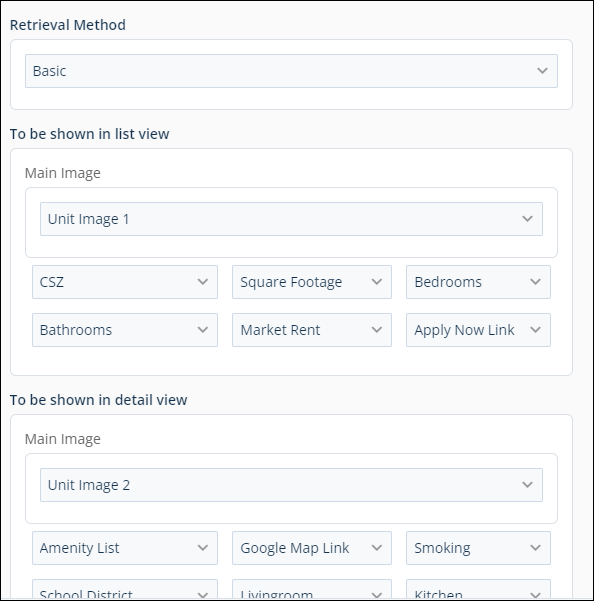
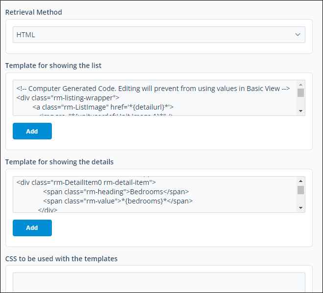
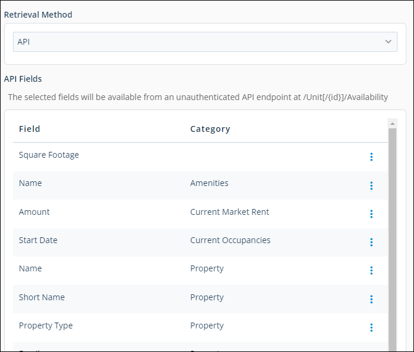
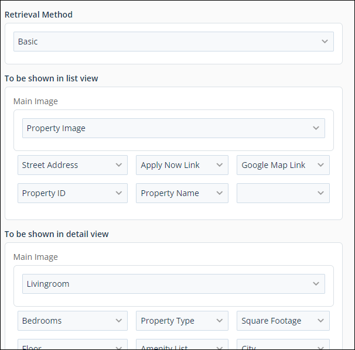
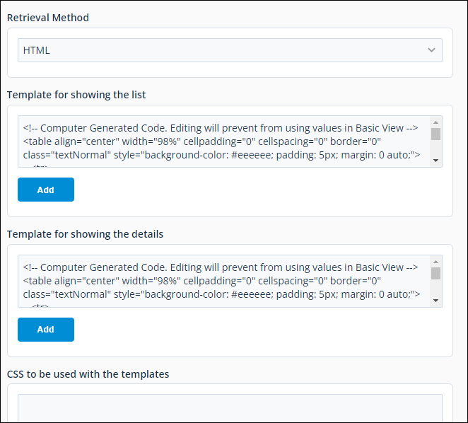
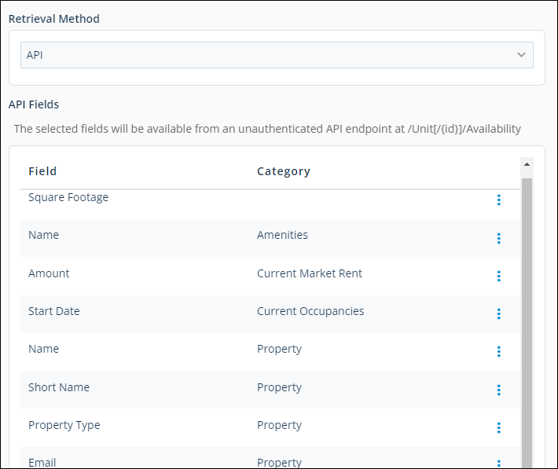

Source: https://rmxhelp.rentmanager.com/Topics/Express/Other/System-Web-Preferences/Availability-Profile.htm
Availability Profile (System Web Preferences)
These system web preferences determine which units in Rent Manager are considered available to rent when a visitor conducts a unit availability search on your Web Template Suite website. Additionally, you can specify what information about the unit is displayed when it is returned as a search result.
If you are using the Web Developer Suite, in which LCS creates a website on your behalf, property-level profiles can also be created. These can be used to market your entire community, or a commercial space, for example.
Related Privileges
| Group | Privilege | Column |
|---|---|---|
| System | System Web Preferences | Enabled |
For more information, refer to Control User Access.
To set these system web preferences, do the following:
-
Go to
 arrow_forward
arrow_forward  Administration, then go to .
Administration, then go to . -
Edit the settings as desired. Each setting is described below.
-
Click Save to accept you changes.
This preference group is divided into multiple sections. Each setting is described within the corresponding section below.
Units Availability Profile
Unit availability profiles establish the criteria that Rent Manager uses to determine if a unit should be considered available to rent.
To add unit profile, do the following:
-
In the Units Availability Profile section, click
 Add Item.
Add Item.
The Add Unit Availability Profile pop-up displays. -
In the General section, enter a Name for this profile.
-
In the Filter Criteria section, choose the criteria to be used by Rent Manager to determine if a unit is considered available and, therefore, is included in the returned values of the unit availability search engine.
Vacancy and Unit Status
Select Vacancy and Unit Status to include rental units that are both vacant and active. The following fields are available to specify what units are displayed in the search results:
Field Description Occupancy End Select the date entered on the tenant's Lease Details pop-up that is considered as the end date of a tenancy for the purposes of this profile: the Move Out date, the Notice date, or the Expected Move Out date.
Related Preferences
If you select Move Out, that date is considered as your availability profile's occupancy end date, regardless of whether or not the move out has been confirmed. The Require moveout confirmation to stop recurring charge preference does not affect availability profiles, only recurring charges. For more information, refer to General Options (System Preferences).
Search
This option determines if searches are conducted using a single date or a date range.
Single Date Allows a prospect to enter a single desired move-in date on your website.
To return units available within the number of days you enter in X, check Show units available within X days of search date. Additionally, to not display units with a tenant scheduled to move in to the unit, check Exclude future leased units.
Date Range Allows a prospect to enter a date range for their desired move-in date on your website.
To display units that are vacant and active for at least a portion of the specified date range, check Show any available within date range.
More Information
Do not select Show any available within date range if you intend to specify in system preferences a unit availability profile as the method for determining which rental units may be fed to an internet listing service (ILS). For more information, refer to Online Listings Availability Filters (System Preferences).
For the Consider the following days as occupied for a search field, check Move In dates to consider a unit occupied on the Move In day of a tenant, and/or check Selected occupancy end to consider a unit occupied on the day a tenant moves out of a unit as defined above in the Occupancy End field.
User Defined Field
Select User Defined Field to use a user defined field (UDF) to determine what units display in the search results. Select a unit-level user defined field of the Yes/No type from the drop-down list. Units that have this UDF set to Yes are included in the search results. For more information, refer to Unit User Defined Fields (Pop-Up).
Follow Online Listings Feed Field
To include rental units that are submitted to an internet listing service (ILS) feed through Rent Manager, select Follow online listings feed. This option uses the Unit Filter Criteria settings enabled in system preferences. For more information, refer to Online Listings Availability Filters (System Preferences).
-
If your database has guest card templates created, select the applicable template in the Guest Card section.
Option Description Template
The desired template from the drop-down list.
Link Text
The text that displays on the button a visitor to your website clicks to open the guest card form. For example, Request Information.
-
In the Retrieval Method field, specify way the images and field values display for a unit from the following options.
Basic
Allows you to customize what information about the unit displays by selecting attributes from drop-down lists.

To determine how these pages display, do the following:
-
In the To be shown in list view section, select the Main Image of the unit that displays on the search results page.
Both property and unit image types are available. -
Select up to six options in the drop-down lists to display in the search results.
-
In the To be shown in the detail view section, select the Main Image of the unit that displays on the unit's detail page.
Both property and unit image types are available. -
Select up to twelve options in the drop-down lists to display on that unit's page.
HTML Template
Allows you to customize the unit information that displays by writing HTML.

To determine how these pages display, do the following:
-
In the Template for showing the list section, enter the HTML code to display the list of available units that match the visitor's search criteria.
Additionally, click Add to open the Script Builder. -
In the Template for showing the details section, enter the HTML code which displays the detail page of a selected unit.
Additionally, click Add to open the Script Builder. -
Optionally, if you are using an iFrame to embed unit availability in your website, enter the CSS to be used with the templates.
More Information
You may use class names that already exist in a current style sheet linked to your website, or you can create a new CSS using an HTML editor and upload it to your existing website.
API
This is available for users with custom websites. Your website developer can quickly add or remove data points in the API Fields section. These data points are used with a custom-designed unit search tool on your website.

To determine how these pages display, do the following:
Click
Add Item.
The Add API Fields pop-up opens.Check the box next to the fields you want to add to as data points.
When you are finished selecting fields, click Add.
The fields are added to the API Fields section.
-
-
Click OK.
The unit availability profile is added to the Units Availability Profile section. An asterisk (*) displays with the name of the default profile for your site.
To set a new profile as default, click  arrow_forward Set Default to the right of the availability profile you wish to be the system default.
arrow_forward Set Default to the right of the availability profile you wish to be the system default.
More Information
Default profiles, designated with an asterisk *, cannot be deleted. Select another profile to Set Default first, and then deleted the desired profile.
Property Availability Profiles
Property profiles establish the criteria that Rent Manager uses to determine if a property should be considered available to rent.
More Information
Through Web Developer Suite, it’s possible to create property profiles and implement property searches. With the Web Template Suite, only unit searches are available.
To add a property profile, do the following:
-
In the Properties Availability Profile section, click
Add Item.
The Add Property Availability Profile pop-up displays. -
In the General section, enter a Name for this profile.
-
In the Filter Criteria section, choose the criteria to be used by Rent Manager to determine if a property is considered available and, therefore, is included in the returned values of the availability search engine.
Field Description Show all properties
All properties display in the search results.
User Defined Field
Includes properties that have the specified Yes/No property user-defined field set to Yes. For example, you selected a Yes/No property-level user-defined field called Taxed District. Each property with this UDF set to Yes displays in the search results.
Follow unit availability profile
Includes properties that have at least one unit that satisfies the chosen unit availability search criteria.
-
In the Retrieval Method field, specify way the images and field values display for a property from the following options.
Basic
Allows you to customize what information about the property displays by selecting attributes from drop-down lists.

To determine how these pages display, do the following:
-
In the To be shown in list view section, select the Main Image of the property that displays on the search results page.
Both property and unit image types are available. -
Select up to six options in the drop-down lists to display in the search results.
-
In the To be shown in the detail view section, select the Main Image of the property that displays on the property's detail page.
Both property and unit image types are available. -
Select up to twelve options in the drop-down lists to display on that property's page.
HTML Template
Allows you to customize the property information that displays by writing HTML.

To determine how these pages display, do the following:
-
In the Template for showing the list section, enter the HTML code to display the list of available properties that match the visitor's search criteria.
Additionally, click Add to open the Script Builder. -
In the Template for showing the details section, enter the HTML code which displays the detail page of a selected property.
Additionally, click Add to open the Script Builder -
Optionally, if you are using an iFrame to embed property availability in your website, enter the CSS to be used with the templates.
More Information
You may use class names that already exist in a current style sheet linked to your website, or you can create a new CSS using an HTML editor and upload it to your existing website.
API
This is available for users with custom websites. Your website developer can quickly add or remove data points in the API Fields section. These data points are used with a custom-designed unit search tool on your website.

To determine how these pages display, do the following:
-
Click Add API Fields
.
The Add API Fields pop-up opens. -
Check the box next to the fields you want to add to as data points.
-
When you are finished selecting fields, click Add.
The fields are added to the API Fields section.
-
-
Click OK.
The property availability profile is added to the Properties Availability Profile section. An asterisk (*) displays on the default profile for your site.
To set a new profile as default, click  arrow_forward Set Default to the right of the availability profile you wish to be the system default.
arrow_forward Set Default to the right of the availability profile you wish to be the system default.
More Information
Default profiles, designated with an asterisk *, cannot be deleted. Select another profile to Set Default first, and then deleted the desired profile.